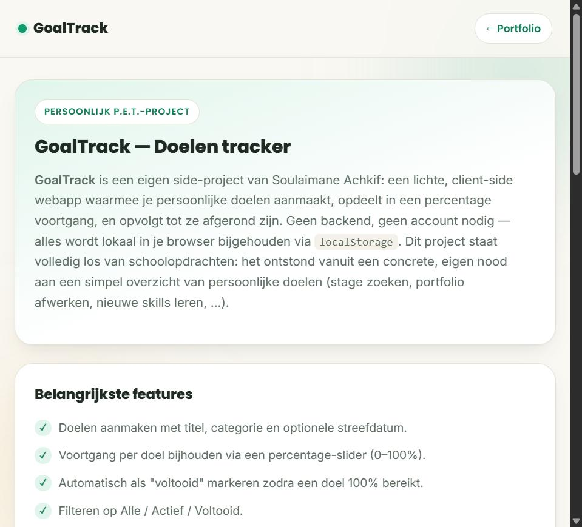
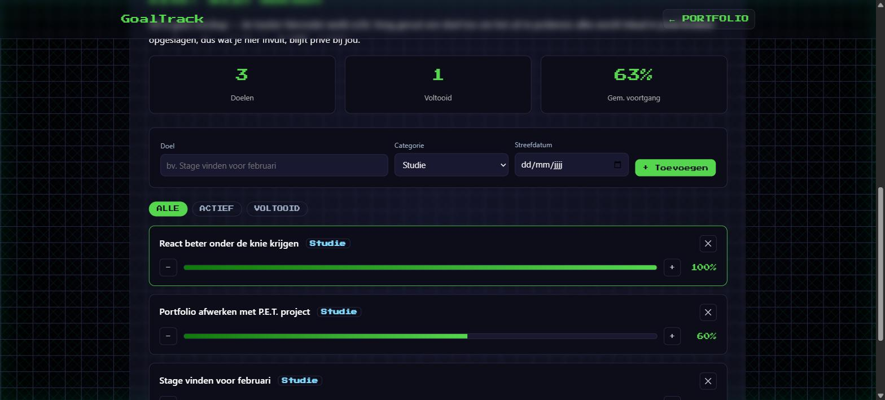
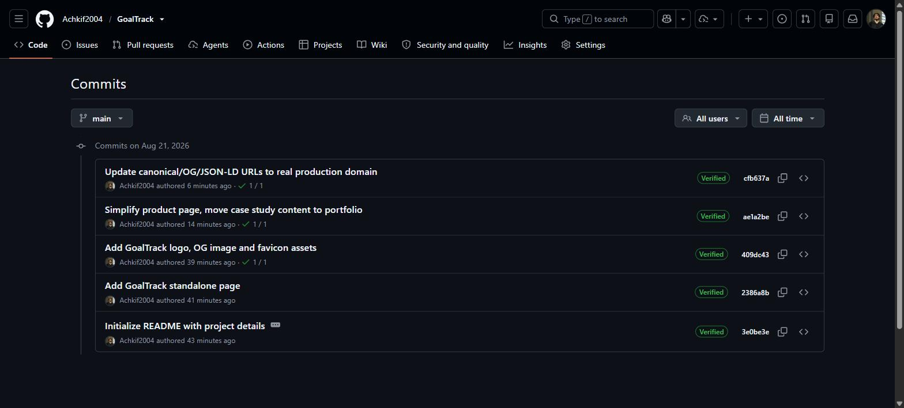

GoalTrack — Doelen tracker
GoalTrack is een eigen side-project: een lichte, client-side webapp waarmee je persoonlijke doelen aanmaakt, opdeelt in een percentage voortgang, en opvolgt tot ze afgerond zijn. Geen backend, geen account nodig — alles wordt lokaal in je browser bijgehouden via localStorage. Dit project staat volledig los van mijn schoolopdrachten: ik startte het zelf op omdat ik zelf nood had aan een simpel overzicht van mijn eigen doelen (stage zoeken, portfolio afwerken, nieuwe skills leren, ...), en omdat mijn portfolio tot nu toe alleen schoolprojecten bevatte. In tegenstelling tot mijn schoolprojecten draait GoalTrack als een volledig eigen, apart gehoste website, met haar eigen GitHub-repository en Vercel-deployment.
Belangrijkste features
- Doelen aanmaken met titel, categorie en optionele streefdatum.
- Voortgang per doel bijhouden via een percentage-slider (0–100%).
- Automatisch als "voltooid" markeren zodra een doel 100% bereikt.
- Filteren op Alle / Actief / Voltooid.
- Alles blijft bewaard tussen bezoeken dankzij
localStorage— geen server nodig.

Resultaat
GoalTrack draait als volledig eigen, apart gehoste website (niet ingebed in dit portfolio) — klik hierboven op "Website" om de live, werkende tracker zelf uit te proberen. Hieronder enkele schermafbeeldingen van het eindresultaat en het ontwikkelproces:



Ontwikkelproces
Waarom een side-project, en waarom dit?
Bij het herbekijken van mijn portfolio viel op dat de drie bestaande projecten (RoadMate, 3D Ramen kiosk, TO-DO website) stuk voor stuk schoolopdrachten zijn. Om mijn portfolio niet alleen schoolprojecten te laten tonen, koos ik voor iets kleins dat ik volledig zelf kon opzetten, bedenken en afwerken: een minimalistische doelen-tracker. Geen ingewikkeld idee, maar wel een volledig eigen, werkend product — van concept tot live deployment.
Front-end & opslag
GoalTrack is bewust eenvoudig gehouden: pure HTML, CSS en vanilla JavaScript, zonder framework
of build-stap, en zonder backend. Elke actie (doel toevoegen, voortgang aanpassen, verwijderen,
filteren) wordt meteen weggeschreven naar localStorage als JSON, en bij het laden
van de pagina wordt die JSON terug ingelezen om de lijst te herbouwen. Dat maakt de tool
volledig client-side en dus makkelijk te hosten als statische pagina.
Van ingebed naar een echte, aparte website
GoalTrack begon als een pagina binnenin dit portfolio. Na verder nadenken besefte ik dat een side-project pas echt op zichzelf staat als het ook technisch volledig gescheiden is: een eigen GitHub-repository, een eigen Vercel-deployment en een eigen domein, los van de portfolio-code. Daarom bouwde ik GoalTrack opnieuw als volledig zelfstandige website (github.com/Achkif2004/GoalTrack), zette die zelf live via Vercel, en deze pagina hier in het portfolio is enkel nog een verwijzing ernaartoe — net zoals bij mijn andere externe project, PlanYourTrip.be.
Uitdagingen & oplossingen
Voortgang bijhouden zonder complexiteit
Ik overwoog eerst een systeem met losse subtaken per doel (zoals een checklist), maar dat maakte de interface meteen een stuk complexer. Ik koos bewust voor een simpele percentage-voortgang per doel: minder flexibel dan losse subtaken, maar veel sneller te gebruiken en genoeg om echt bij te houden hoe ver ik sta.
State consistent houden met localStorage
Omdat er geen backend is, moest ik zelf zorgen dat de lijst van doelen in de UI altijd exact
overeenkomt met wat er in localStorage staat, ook na toevoegen, aanpassen en
verwijderen. Ik loste dat op met één centrale render()-functie die telkens de
volledige lijst opnieuw opbouwt vanuit de opgeslagen data, in plaats van de DOM stukje bij
beetje bij te werken — minder foutgevoelig, ook al is het iets minder performant dan een
volledig reactief systeem.
Een tweede keer opzetten als aparte site
Nadat ik besefte dat GoalTrack een volledig eigen website moest worden, moest ik de assets (logo, favicon, OG-afbeelding) en de app-code herbruiken in een nieuwe, losstaande repository, en zelf een nieuw Vercel-project opzetten en deployen. Dat leerde me hoe een klein project in de praktijk overgaat van "onderdeel van iets groters" naar een écht zelfstandig, live product met zijn eigen adres op het internet.
Context & doel
GoalTrack maakt deel uit van de "P.E.T. Projects"-challenge van het vak Create: Digital products: eigen, niet-opgelegde projecten toevoegen aan mijn portfolio om te tonen dat ik ook buiten schoolopdrachten om dingen bouw. Het doel was niet om iets ingewikkelds neer te zetten, maar om een volledig eigen idee — van bedenken tot live zetten als zelfstandige website — helemaal zelf af te werken.
Wat ik hieruit geleerd heb
Dit project leerde me vooral hoe ver je kan komen met alleen vanilla JavaScript en
localStorage, zonder meteen naar een framework of database te grijpen. Het
dwong me ook om bewust klein te blijven: in plaats van meteen features te stapelen
(accounts, subtaken, notificaties), koos ik voor de kleinste versie die al écht bruikbaar is.
Daarnaast leerde ik hoe je een klein project als volledig zelfstandig product opzet: een eigen
repository, een eigen deployment, en een duidelijke scheiding tussen "mijn portfolio" en
"mijn side-project dat toevallig in mijn portfolio wordt getoond".
Volgende stappen
Als ik hier verder aan zou bouwen, zou ik als eerste stap subtaken per doel toevoegen, gevolgd door een optie om doelen te exporteren/importeren als JSON-bestand (zodat je ze kan meenemen tussen apparaten zonder account). Op iets langere termijn zou een gedeeld account met een kleine backend (bijvoorbeeld met dezelfde PHP-aanpak als bij PlanYourTrip.be) het mogelijk maken om doelen te synchroniseren tussen toestellen.
Tools & werkwijze
Ik bouwde GoalTrack in dezelfde stijl als de rest van mijn portfolio: HTML, CSS en JavaScript, met dezelfde visuele "matrix"-huisstijl zodat het project niet als een vreemde eend in de bijt aanvoelt, ook al draait het intussen op een eigen domein. Ik werkte incrementeel: eerst de basis (doel toevoegen en tonen), dan voortgang en filters, vervolgens de styling verfijnd zodat die aansluit bij RoadMate, de Ramen kiosk en de TO-DO website, en tot slot de omzetting naar een volledig zelfstandige repository en Vercel-deployment.